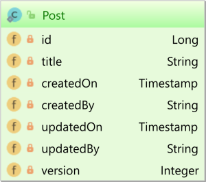

为什么需要使用 ResultTransformer 自定义结果集映射
JPA 查询允许您获取实体或 DTO 投影。但是，有时需要一个组合的结果集。
实体模型
假设我们有下面两个实体：

这两个实体没有通过 @ManyToOne 进行关联。但是，两个实体共享一个 locale 属性，我们可以使用它来在两者之间形成连接。
JPA 查询允许您获取实体或 DTO 投影。但是，有时需要一个组合的结果集。
假设我们有下面两个实体：
这两个实体没有通过 @ManyToOne 进行关联。但是，两个实体共享一个 locale 属性，我们可以使用它来在两者之间形成连接。
hibernate 默认的命名策略是不会将驼峰式命名 (cameCase) 映射到蛇形命名 (snake_case) 上去的，
虽然可以直接在 @Column 上指定需要映射的 name，但是使用策略一致地应用命名更方便些。
从 Hibernate 5 开始，数据库对象命名策略由 PhysicalNamingStrategy 接口表示，我们可以自定义该接口以自动将数据库标识符从 cameCase 转换为 snake_case。
我们经常遇到涉及很多条件的业务逻辑，每个都需要不同的处理。我们以 Calculator 类为例。我们将有一个方法，它接受两个数字和一个运算符作为输入，并根据操作返回结果：
[TOC]
java 代码源文件经过 javac 编译期编译为 .class 文件，.class 文件不包含处理器本机代码，而是包含字节码 - JVM 的机器语言。启动器使用虚拟机运行程序。

由于 JVM 可在许多不同的操作系统上使用，因此相同的 .class 文件可以在不同系统上运行。
JRE(Java Runtime Environment) 是 JVM 执行代码的基础。JDK 是 Java 程序开发所有特性的工具，包含JRE，编译，开发和调试工具。

值传递：传递到方法中的形参值只是实参值的一个副本，对形参的修改不会影响之前的值；
引用传递：形参只是实参的别名。它指向真正的实参，对形参所做的任意修改都反映在实参中。
Java中都是值传递，基本类型值传递，对象类型是引用值传递，也就是说值的内容是对象的引用。
Spring Security 的 Web 基础结构完全基于标准的 servlet 过滤器。Spring Security 在内部维护一个过滤器链，其中每个过滤器都有特定的责任，过滤器的顺序很重要，因为它们之间存在依赖关系。
假设我们有以下 Post 实体：

如果你需要修改实体，则需要抓取整个实体；但是如果你只是对其中的几列感兴趣，则使用 DTO 会更有效。
如果我们只是想选择 Post 的 id 和 title，如果抓取整个实体会比较浪费资源，接下来我们看下 JPA 和 Hibernate 怎么实现我们的目标。
在关系数据库系统中，通过外键列来链接两个表之间的一对多关联，以便子表记录引用父表的主键。

尽管在关系型数据库管理系统（RDBMS）中可能很简单，但在涉及 JPA 时，一对多数据库关联可以通过 @ManyToOne 或 @OneToMany 关联来表示，因为面向对象编程（OOP）的关联可以是单向的，也可以是双向的。
在 JavaScript 或等语言中会出现很多运算符，对于有些运算符不明白看别人代码就有些懵，学习并整理一下它们的功能及用法。
这些运算符主要包括：双叹号 !!，短路或 ||，短路与 &&，按位非 ~，按位与 &，异或 ^，双波浪号 ~~，可选链式操作符(Optional Chaining Operator) ?.
有些运算符是某些语言特有的，但大多具有普遍性，代表的含义和语法也不尽相同。
可能还会有一些运算符比如：可选参数 ?: 非空断言 !. 这些包含在某个特定语言，例如：TypeScript 中的运算符在此不再解释。
总结下 bindActionCreators(actionCreators, dispatch) 的用法：
actionCreator:如果我们的 action 直接可以拿到的，当然就不需要 actionCreator，我们可以直接 store.dispatch({'INCREMENT'})
但是如果我们的 action 信息是异步获取的，或者其它方法获取的话，就需要 actionCreator，感觉是废话。
actionCreator 是什么我们直接复制文档中的概念：
一个 action creator 就是一个创建 action 的函数。action 是信息的载体，action creator 是用来创建 action 的工厂。
调用 action creator 只会产生一个 action，但是不会分发（dispatch）它。需要调用 store 的
dispatch方法去完成分发。平时我们所说的 bound action creator(绑定行为创建器) 其实是说 调用 action creator 并立即将结果分发给特定的 store 实例 的方法。
在配置 NGINX 文件映射时发现 root 并没有按照期待映射，找解决方法，建议换作 alias 映射目录，不解，查下文档，理解区别。
root 指令用于指定搜索文件的根目录。NGINX 将请求 URI 附加到 root 指定的路径。该指令可以放置在 http，server 或 location 上下文中的任何级别上。